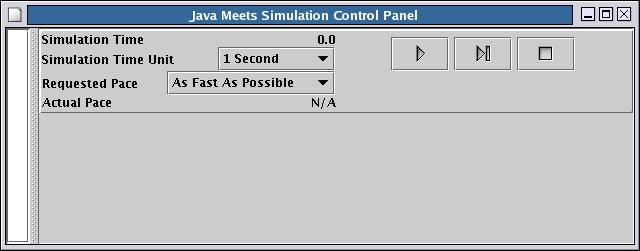
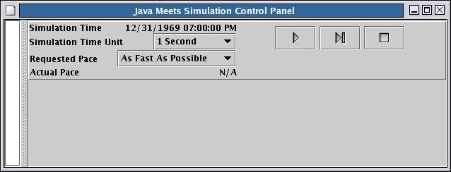
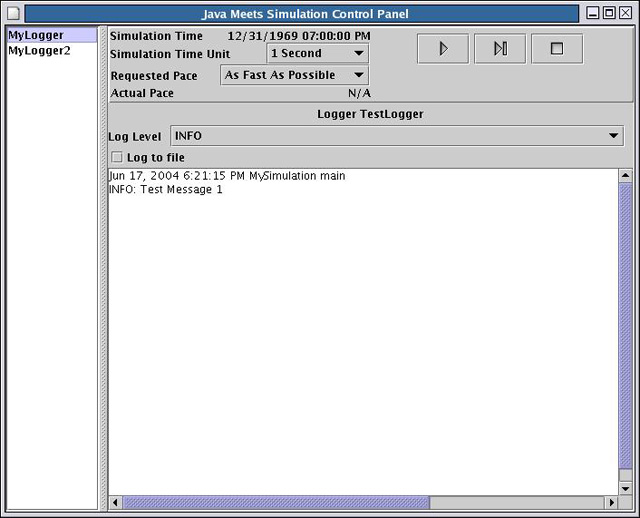
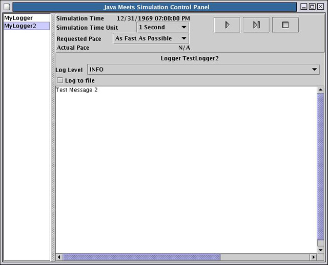
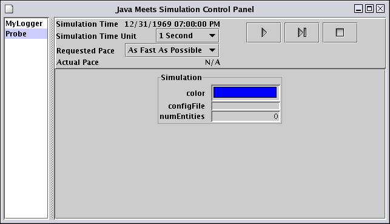
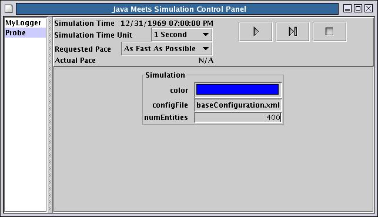
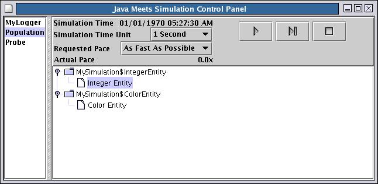
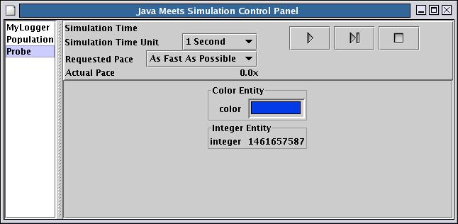

System.exit(0).
No completion notification occurs.
Example: Making the GUI VisibleA handy way to use the GUI is to turn it on when a {@link org.mitre.sim.Simulation Simulation} instance is created.
|

The VCR-like buttons control the execution of the simulation. The buttons and their functions are
|
Start or resume the simulation |
|
Pause the simulation. This button replaces the play button while the simulation is running. |
| Display or set the last value of simulation time. See {@link org.mitre.sim.Simulation#setTimeLast(double) Simulation.setTimeLast(double)}. | |
|
Terminate the application abruptly by calling System.exit(0).
No completion notification occurs.
|
java.text.Format, or one of its
subclasses, such as java.text.SimpleDateFormat.
The subclass must define the methods below.
(Not all subclasses of java.text.Format define both methods.)
| Method | Purpose |
|---|---|
public void applyPattern(String pattern); |
Controls how the simulation time should be formatted. |
public String format(double d); |
Applies the current simulation time (the double parameter) to the format specified by the applyFormat method invocation. |
The developer-defined formatter class must then be referenced in sim.properties.
Example: Displaying Simulation Time As a DateThejava.txt.SimpleDateFormat
class can be extended to display the simulation time as a regular date and time.
The code below assumes that the simulation time unit is 1 second.
The developer defines the following subclass of SimpleDateFormat, and then references
it in the sim.properties file.
|
The sim.properties file contains entries as follows:
org.mitre.sim.GUI.component.control.timeFormatter.class = mypackage.MyDateFormat org.mitre.sim.GUI.component.control.timeFormatter.format = MM/dd/yyyy hh:mm:ss aa |
|
The above code and system properties yield the following at startup:

|
The GUI also provides control of the simulation pace. The Simulation Time Unit drop-down list contains a list of common units of simulation time The Requested Pace drop-down list contains common pace multipliers. A user can set a desired pace by choosing a simulation time unit, and a requested pace. The number displayed as Actual Pace is computed every second, based on the amount of simulation time that has passed, and the current simulation time unit.
The set of components constituting the GUI display is controlled by the
org.mitre.sim.GUI.components property in the sim.properties file.
This property lists the names of the GUI components to display.
These names are user-defined, arbitrary, and separated by spaces.
Each component is configured by a set of properties which are constructed as follows:
<base name>where <base name> is.<component name>.<component property name>
org.mitre.sim.GUI.component,
<component name> is the component name,
specified in the org.mitre.sim.GUI.components property,
and <component property name> is some given property defined for that component.
All components have at least one property, class, that determines the
classname of the component.
Component names must be unique, but multiple components may share the same component class.
The framework provides three classes that can be used as GUI components: {@link org.mitre.sim.gui.LogDisplay}, {@link org.mitre.sim.gui.ProbeDisplay ProbeDisplay}, and {@link org.mitre.sim.gui.SimulationPopulation SimulationPopulation}. The capabilities and details of each display type are described in following sections.
java.util.logging, the simulation GUI includes
an optional component to display information logged to such loggers.
The Log Display component
(class {@link org.mitre.sim.gui.LogDisplay LogDisplay})
displays logged output from developer-defined java.util.logging.Logger
instances.
LogDisplay also allows capture of logged data to a file.
The LogDisplay functions as a java.util.logging.Handler
to a java.util.logging.Logger.
LogDisplay uses properties defined in sim.properties.
Some of these are required if LogDisplay is to be used.
Properties relevant to LogDisplay are summarized below.
| Component Property Name | Purpose |
|---|---|
logger.name |
Name of the logger.
This is the parameter typically passed to the
Logger.getLogger(String name) method.
Required |
handler.level |
Initial level that the LogDisplay Handler uses.
Default is OFF. |
handler.formatter.class |
Formatter to use for this Handler.
Default is
{@link org.mitre.sim.util.BasicFormatter},
and it is recommended that this not be changed.
This formatter uses the java.text.MessageFormat to format the message,
and is easily customized.
See {@link org.mitre.sim.util.BasicFormatter} for more information. |
| handler.formatter.format | Desired format for a log message.
This is only used if the handler.formatter.class
is {@link org.mitre.sim.util.BasicFormatter}.
See {@link org.mitre.sim.util.BasicFormatter} for example message formats. |
| handler.maximumLogRecords | Maximum number of log records to keep --
total number of log records maintained in the window.
This number should be kept small,
because javax.swing.TextArea implementations are often slow
when processing a large amount of data.
The default value for this field is 100.
A negative or zero value sets the value to 1.
This value only pertains to log records displayed in the GUI,
and not to log records saved to a file. |
Example: Use of LogDisplayThis example defines twoLogDisplay components
called MyLogger and MyLogger2, and two java.util.logging.Logger
instances called TestLogger and TestLogger2.
|
The following entries in sim.properties work with the code above.
|
|
The code and properties above combine to create displays like these below.
  |
Example: Use of ProbeDisplayThis example defines three properties:numEntities, color, and configFile.
The entries in sim.properties configure a Probe display that
allows the user to examine and modify the JavaBeans properties.
The example also includes a Log display for a developer-defined logger;
this display is not necessary for the functioning of the Probe display.
|
The code above works with the following sim.properties entries.
The following properties are associated with the LogDisplay in this example.org.mitre.sim.GUI.components = Probe org.mitre.sim.GUI.component.Probe.class = org.mitre.sim.gui.ProbeDisplay
|
|
The code and properties file combine to produce the following display.
 Because color is a read-only property, its value cannot be changed from the GUI. However, the value of numEntities can be changed by typing a new number in the corresponding text field. Similarly, a file dialog appears when the field for the file name is clicked next to the configFile label. Afterwords, the control panel looks similar to the following:

|
ProbeDisplay automatically probes the Simulation instance. However, using the Population display, probes on Entities can be performed as well.
The ProbeDisplay class recognizes the properties listed below.
| Component Property Name | Purpose |
|---|---|
updateFrequency |
How frequently each JavaBean is probed. Displayed values are updated at the stated interval. This number is in milliseconds, and defaults to 1000. |
Example: Use of Population DisplayThis example simulation has two Entity subclasses, each subclass with a single Bean property defined whose value is set to change every simulated second. This example incorporates a Population display, to show the entities that can be probed, and a Probe display, to show the JavaBeans property values of the probed entities. Typically both displays are used together. The example also includes a Log display for a developer-defined logger; this display is not necessary for the functioning of the other displays.
|
Entries in the sim.properties relevant to the Population Display are
shown below.
Below are other entries inorg.mitre.sim.GUI.components = Probe Population org.mitre.sim.GUI.component.Probe.class = org.mitre.sim.gui.ProbeDisplay org.mitre.sim.GUI.component.Population.class = org.mitre.sim.gui.SimulationPopulation sim.properties relevant to the LogDisplay
in this example.
|
|
The code and system properties displayed above combine to yield displays like the following.
 
|
The Population Display class recognizes the properties listed in the table below.
| Component Property Name | Purpose |
|---|---|
updateFrequency |
How frequently each JavaBean is probed. Displayed values are updated at the stated interval. This number is in milliseconds, and defaults to 1000. |
sim.properties and
is located in CVS at CVSRoot/sim/resources/sim.properties.
To be accessible at runtime, a resources directory containing sim.properties
must exist at the root of the class file structure.
This occurs two ways:
CVSRoot/sim/classes/resources directory
sim.jar archive.
CVSRoot/sim/build.xml moves
the resources directory to these two places.
Ant target build copies the resources directory to
the CVSRoot/sim/classes directory.
Ant target jar copies the resources directory into the sim.jar archive.
The property file contents that relate to the GUI are described below:
| Property Name | Description | Default Value |
|---|---|---|
| org.mitre.sim.GUI.components | The components to show on the Simulation's GUI. | control |
| org.mitre.sim.GUI.component. <component name>.class | The java class to load for a particular graphical component | [control] = org.mitre.sim.gui.SimControl |
| org.mitre.sim.GUI.component. <component name>.* | Properties specific to a particular GUI component | N/A |
| org.mitre.sim.GUI.component. control.timeFormatter.class | The time format class to use when displaying the simulation time | java.text.DecimalFormat |
| org.mitre.sim.GUI.component. control.timeFormatter.format | Format used to convert the simulation time into a displayable string | #########0.0###### |

Copyright © 2003-2004 The MITRE Corporation